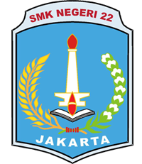

Profil
Seorang mahasiswa yang antusias untuk belajar, penuh rasa ingin tahu, dan siap menghadapi tantangan. Memiliki komunikasi yang baik, mampu membangun hubungan kolaboratif, serta terampil dalam menganalisis masalah dan menemukan solusi efektif dengan komitmen dan integritas tinggi.
Pengalaman
Wakil Ketua Ekstrakurikuler ITClub SMK Negeri 22 Jakarta
IT Support | 2021 - 2022
- Mengembangkan pemahaman yang mendalam tentang TI dan memberikan bantuan kepada rekan-rekan yang berjuang dengan topik-topik yang berhubungan dengan TI.
- Terlibat dalam berbagai proyek dan kegiatan TI, membina kerja sama tim dan kolaborasi di antara anggota.
Juara 3 Workshop Fundamental Penetration Testing & Threat Intelligence
IT - CyberSecurity | 2024
- Kompetisi yang menguji kemampuan dalam analisis kerentanan, simulasi serangan, dan identifikasi ancaman siber, berfokus pada dasar-dasar keamanan siber.
Keterampilan
- Disiplin
- Bertanggung Jawab
- Bekerja dalam tim
- Pemecahan masalah
- Komunikatif
- Kemampuan berpikir kritis
Edukasi

SMK Negeri 22 Jakarta | 2020–2023
Teknik Komputer dan Jaringan
Kualifikasi Level II
Telkom University Jakarta | 2023–sekarang
Mahasiswa Aktif
Fakultas Rekayasa Industri
Program Studi Sistem Informasi
IPK : 3.90